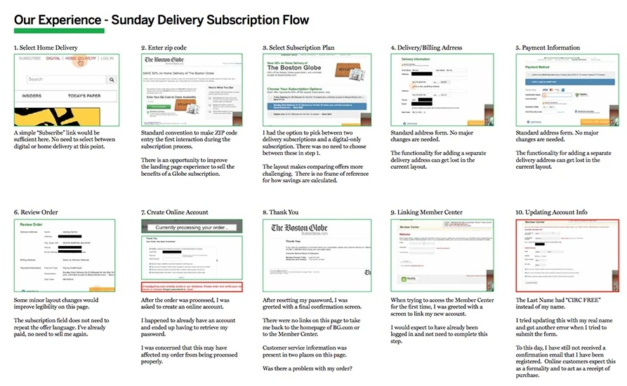
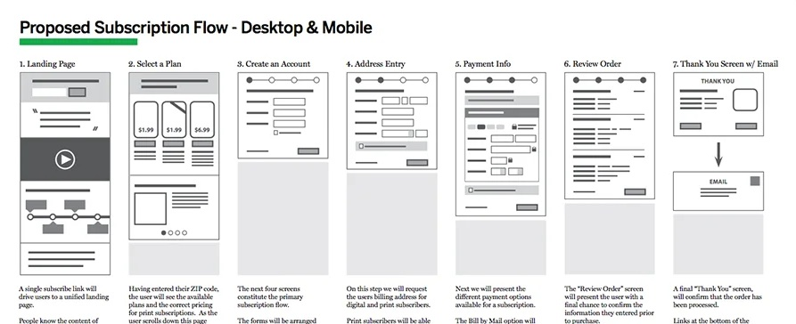
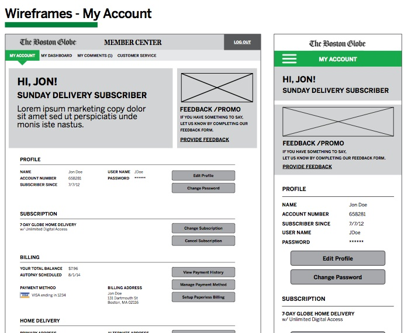
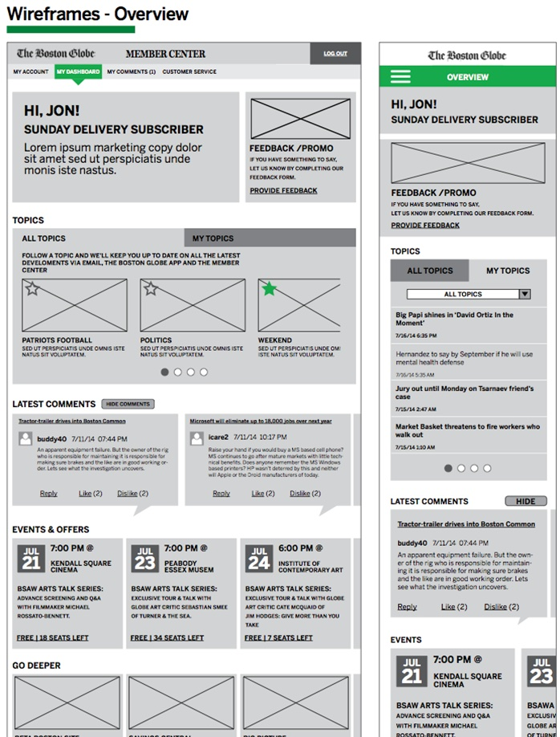
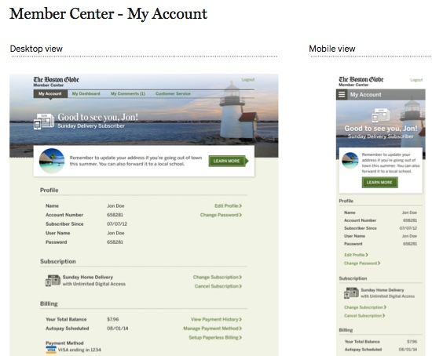
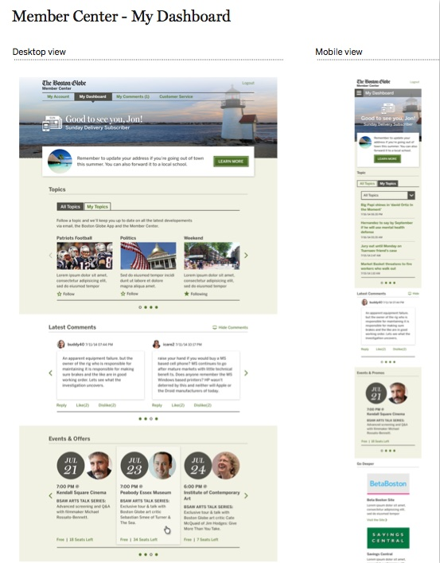

2014 — Lead UX Designer
The Boston Globe
Member Center
Globe subscribers managed their accounts across three separate sites. Signing up happened on boston.com. Creating an account required jumping to a second domain. The member center lived on a third. None of them were connected in any meaningful way.
The goal was to consolidate the entire flow onto the main site. We mapped the existing registration journey end-to-end to find every step that could be cut. Most of the friction wasn't complexity. It was the handoffs between sites, the repeated authentication, the visual discontinuity.
The new registration flow was a three-step wizard: account creation, address, billing. The member center gave subscribers a single place to manage their subscription, update payment, or pause service while they were away. All of it on the main site, under one login.
- Client
- The Boston Globe
- Role
- Lead UX Designer
- Platform
- Desktop + mobile
- Goal
- 3-click task completion





